Algeria called by it citizens "Algeria The Continent" is an arab-berber country situated in North Africa between Morocco and Tunisia and bounded by the Mediterranean Sea in the North. The name Algeria comes from the Arabic word "Al Jazair" which means "The islands" in reference to the rocky islands located near the state of Algeria in...
Common Threads
Even with the large superficie of Algeria and it rich culture and history, there is some common elements and traditions...
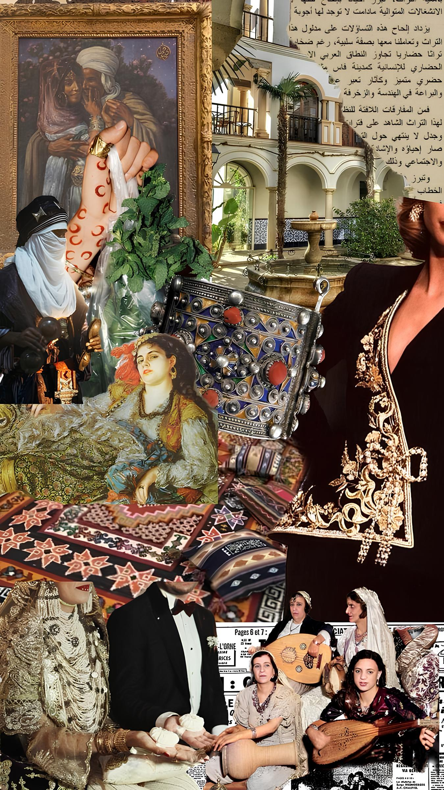
Algerian's Regions
Algeria is divided into regions which are divided into cities, we will take some examples of Algerian regions and cities...
More About Algeria
This regions and informations are a little part from the rich culture, history and sites of Algeria, if you want to learn more about Algeria you can check the links...
Algeria The Continent
Common Threads
Algerian's Regions
More About Algeria
Algeria The Continent
Algeria called by it citizens "Algeria The Continent" is an arab-berber country situated in North Africa between Morocco and Tunisia and bounded by the Mediterranean Sea in the North. The name Algeria comes from the Arabic word "Al Jazair" which means "The islands" in reference to the rocky islands located near the state of Algeria in the Mediterranean Sea. With a superficie of 1.975.729 km² of Sahara from 2.381.741 km² of the total superficie, Algeria is the largest country in Africa habited by more than 46.8 millions citizens in 2024 divided into 58 wilayas (cities). This country has a rich history of civilizations and colonialism and the 1.9 million and 2.4 millions years-old Oldowan stone artifacts and associated cutmarks of fossil bones found in Ain Boucherit in the Algerian Sahara are the proof of hominins inhabited the Mediterranean fringe in North Africa and the long history of the country...
Common Threads
Even with the large superficie of Algeria and it rich culture and history, there is some common elements and traditions:
Language:
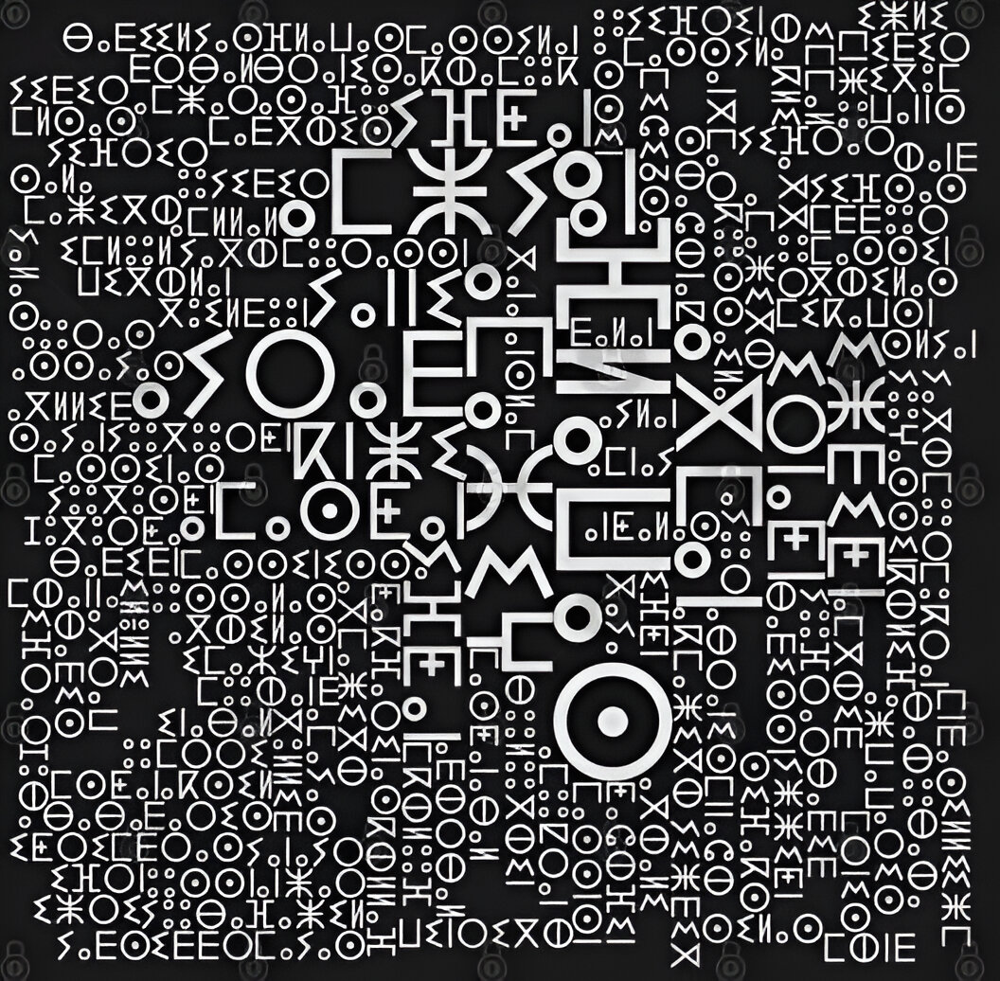
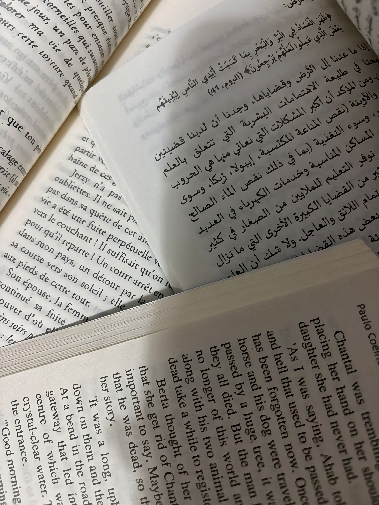
After the year 670, Arab people started moving to Algeria to spread Islam, decades from that and till now, the Arabic language is an important language there and it is the first official language in this country. But before that, people who lived in North Africa were all berber, and they used to communicate with berber language known now as Amazigh language which is maintained in Algeria as the second official language of the country. Due to the French colonisation of Algeria, french is the third language talked in this country and since English is the most talked language in the world, it's the fourth language. But for their daily communication, Algerian people talk in dialectes that change from city to city were they mix Arabic, french and sometimes English meanwhile Amazigh people talk in amazigh dialectes that change from a place to another.
Religion:
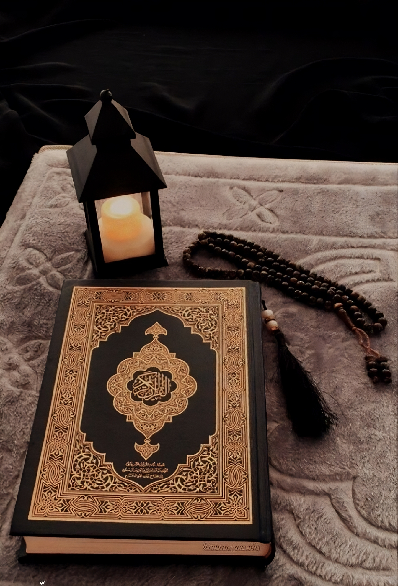
Islam (the Maliki Sunni Madhab) is the religion of the majority of the Algerian people (99% of the population are Muslim) as it controls the way of life in this society. This religion maintains the central identity of the Algerian society socially and culturally and it behaves according to Islamic Morals and way in most of the situations. Islam reached Algeria during the Umayyad Dynasty following the conquest in a long process from 670 to 711 since Christianity and Paganism were dominating at this time, but even, it took a long time to be spread in Algeria since the Tuareg did not convert until the 15th century. But there is still Christians (both Catholic and Evangelical), Ibadis, Jews, Shiites and Ahmadis that represent 1% of the population.
French Colonialism and The Algerian Revolution:
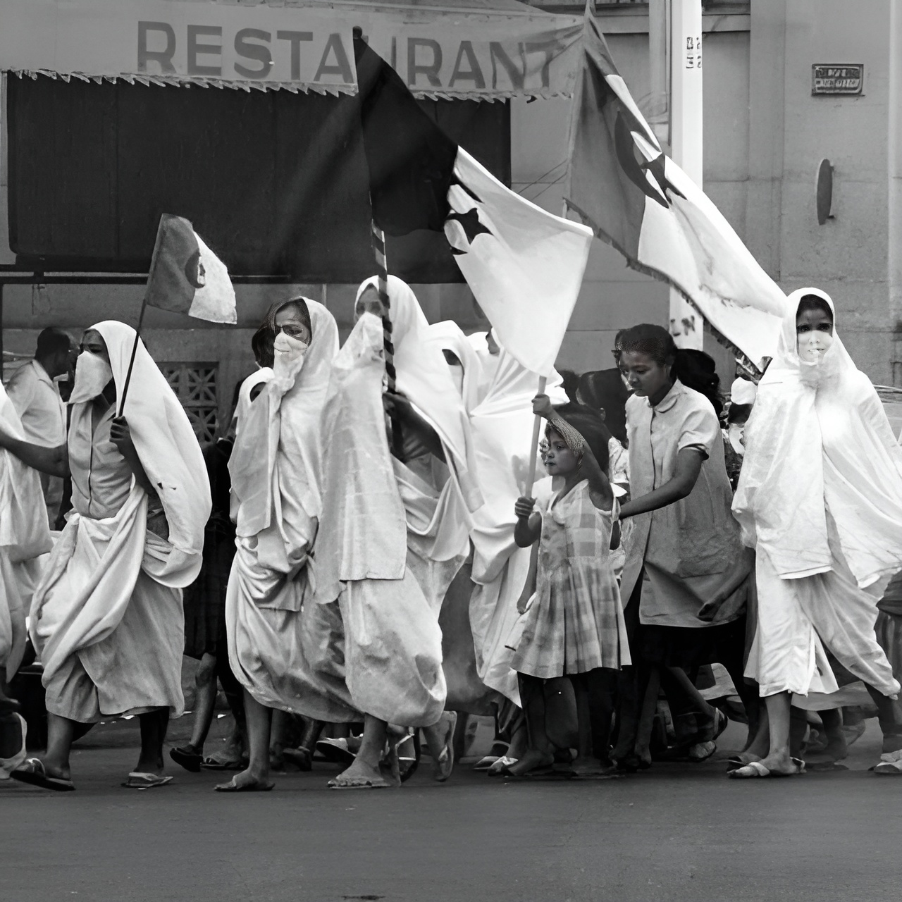
In 1830, the French invaded Algeria, capturing the capital port city of Algiers, and by 1834, the country became a French Colony, and by 1848, it was declared by the French constitution of 1848 to be an integral part of French Territory. The colonialism faced many oppositions from the day one and for the 132 years of colonisation that came after as El Amir Abd-El-Kader (from 1832 to 1847), Lalla Fatima N'soumer (1849 to 1857), Cheikh Bouamama (1881 to 1908) and many others in different regions of Algeria. After the first World War and collective awareness, the resistance started to be organised by the organisation of religious and intellectual associations and creation of political parties, the most important one was the "North African Star" in Paris in 1926 with Messali Hadj as leader, it was the first to call for Algerian Independence. After the second, the 8th May 1945 massacre, where more than 45 thousands Algerians were killed by the French Forces, was one of the great turning points in colonial history. On 1st November 1954 attacks across Algeria marked the beginning of the Algerian Revolution which was led by the National Liberation Front (FLN) and only ended 8 years after with more than 1.5 millions Algerian martyrs in 5th July 1962 with the country's formal declaration of independence from France.
Food:
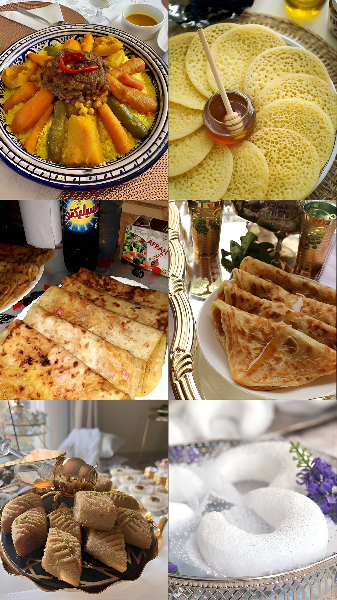
Algeria is a very diversified country even in food, each city and place has it own traditional food, but there is some dishes shared by all Algerian regions we can cite some of them: Couscous: it is the most known one and it is shared by all the Maghrebin countries, but the recipe differs from place to place, in East Algeria, they are known for there Seafoud Couscous, in Kabylie they have El Makfoul, couscous with peas, bean and olive oil, there is also couscous with red sauce, white sauce or with sugar and raisin. M'hajeb: a kind of dough filled with a sauce made by onions and tomatoes. Msemen: a dough once cooked we put honey above it. Baghrir: it's like a thousand hole pancake served usually with honey. Honey Makrout: a fried traditional sweet made with coarse semolina and filled with dates or almonds dip in honey and served with tea. Tcharak Msaker: a crescent shaped pastry made from almonds coat with syrup and icing sugar.
Holidays and Festivals:
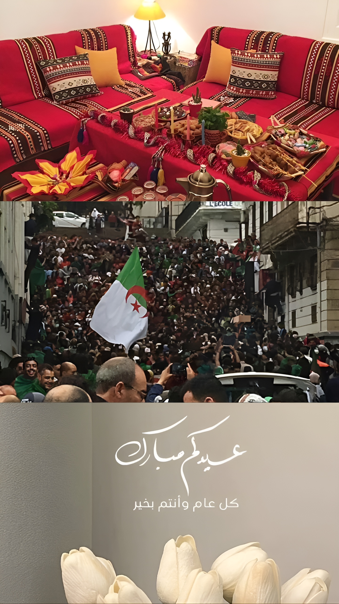
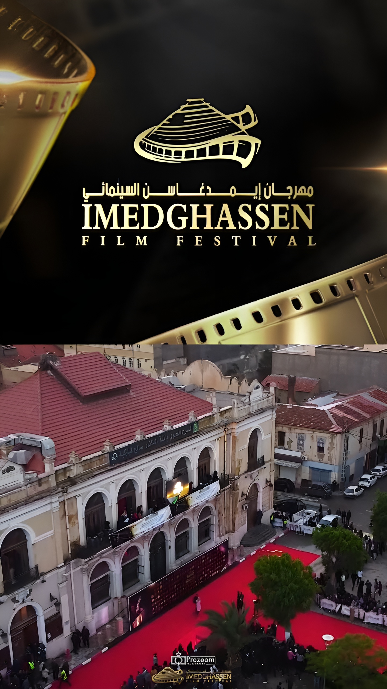
Every year the Algerian society celebrates multiple holidays and festivals: Religious holidays: such as Eid el-Fitr, an Islamic holiday on the first day of the month of Shawwal marking the breaking of the fast of the holy month of Ramadan; and Eid el-Adha, another Islamic holiday that takes place on the 10th of the month of Dhu al-Hijja, the last month of the Muslim calendar, after Waqfat Arafa (station on Mount Arafat), it marks the end of the Hajj and commemorates Ibrahim willingness to sacrifice his son who accepted this divine command by the sacrifice of a sheep on the name of God. National holidays: such as the Anniversary of the Algerian Revolution: on the 1st November and the Independence Day on the 5th July of every year to remember the Algerian Revolution and how our grandparents and great-grandparents sacrificed themselves so we can now live in an independent country and to not forget the history of our country. Yennayer: which corresponds to the first day of the agrarian calendar used by the Imazighen for several centuries and the 12th of the month of January, in general the dinner of this day depends on the region and by night all the family gets together around a table full of chocolates, nuts, dates and fruits such as bananas and oranges to pass memorable family moments. The Imedghassen International Film Festival: an annual international event founded in 2019 in Batna, a city in Algeria and it takes its name from the Numidian Mausoleum of Imedghassen located in the area, organized by El Lemssa Cultural Cooperative and accredited by the Ministry of Culture and Arts, it's a competition in cinematography professions, as well as training workshops, forums and tourist excursions. You can check their official website: Click here. The International Music Festival of Timgad: founded in 1967, is an annual cultural and artistic festival that take place in Batna where music artists from all over the glob, but specially Algerian and African ones, take place in the podium in Timgad to sing and enjoy there time. This is a link for you to watch a video from the festival of 2022: Watch here, and check their official instagram page: Click here.
Algerian's Regions
Algeria is divided into regions which are divided into cities, we will take some examples of Algerian regions and cities below:
Algiers
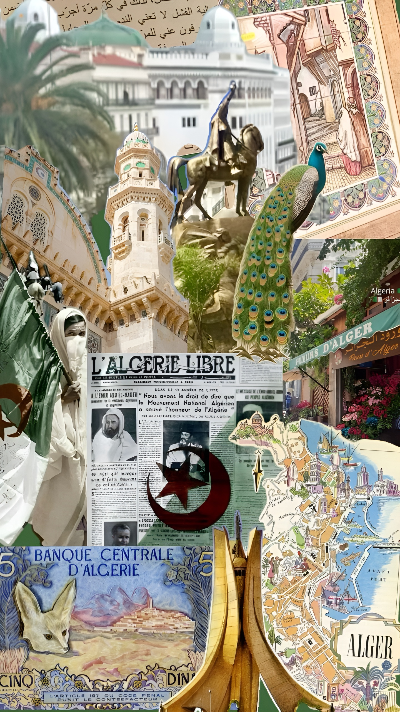
Algies, called The White Algiers, is the political, administrative and economic capital of Algeria, we found there many public buildings of interest, including the whole Kasbah quarter, Martyrs Square, The Grand Mosque, Ketchaoua Mosque, The Roman Catholic Cathedral of Notre Dame D'Afrique and the Old Bibliotheque National D'Alger built in 1800. The most famous movie about Algiers is "The Battle of Algiers" made in 1966 and directed by Gillo Pontecorvo, there is also "Bab El-Oued City made in 1994 directed by Merzak Allouache and Viva Laldjerie made in 2003 and directed by Nadir Mokneche. Artistically Algiers has known many artists in different domains, in painting for example, we can cite Mohammed Racim, Ali Ali-Khodja and Mohamed Temmam; musically, we have El Hadj M'hamed El Anka, El Hachemi Guerouabi, Kamel Messaoudi, Dahmane El Harrachi and many others known for singing Chaabi, an Algerian musical genre born in Algiers at the beginning of the 20th century (you can listen to some of this beautiful music by following this link: click here ) with the dance that goes with of course (you can watch an example here: click here). The women of the capital are known to wear Karakou a traditional Algerian costume that appeared in the 19th century or El-Haik a white clothe that hide all the women body, and for the food, we can cite Rechta, a variety of noodles served with white sauce and flavoured with cinnamon and Dziriyat, an Algerian pastry made with a dough and as all the pastries of Algiers almond stuffing flavoured with lemon zest.
Oran
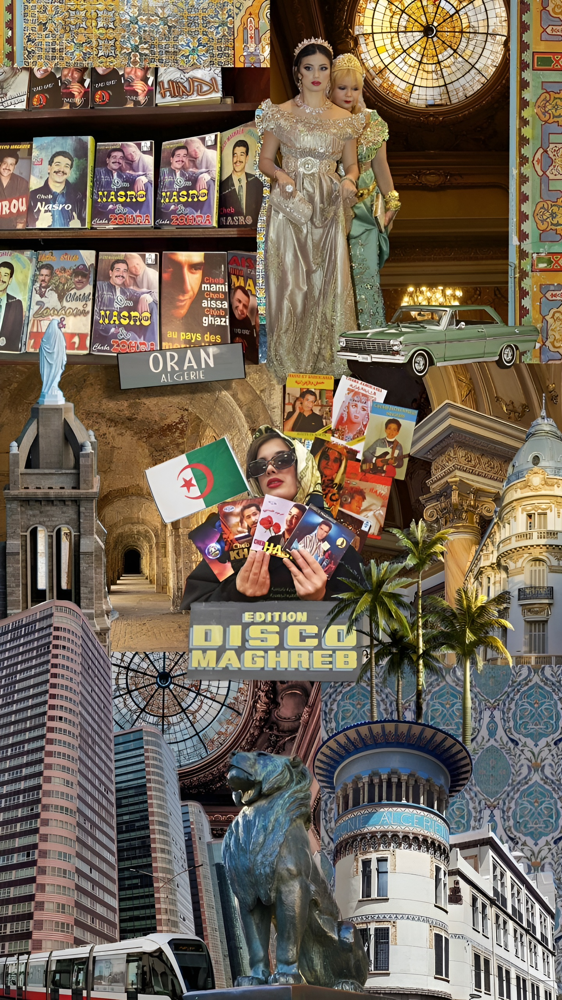
Oran, called also The Radiant -El Bahia-, is the second city in Algeria by population and one of the most important cities in the Maghreb, it architecture is a mix from the Islamic, Spanish and French architecture (due to the colonialism of France and Spain in Oran), and we can remark it in it buildings such as: The Pasha Mosque built in 1797, The Sidi Houari Mosque built in 1799, The Bey Mosque built in 1793, the Cathedral and the Chapel of Santa Cruz, Sidi El Houari (a patron saint to whom mausoleums are dedicated called before as Kasbah), Oran Regional Theater inaugurated in 1908, the Oran Arena built in 1908 and The Oran Cathedral (now a public library) built from 1904 to 1913. As for painters, Oran had Antoine Martinez and Maurice Adrey born both in this city; musically they have Rai, a genre of music formulated by shepherds in 1930s through Arab and European influences, the most known artists are Cheb Akil, Cheb Hasni, Cheb Khaled, Cheb Mami, Chaba Zahouania and many others, most of them passed by Disco Maghreb a boutique and label of Rai (to listen to this music here is a playlist: click here). In the cinema, we can cite "L'inspecteur marque le but" made in 1975 directed by Kaddour Brahim Zakaria and "L'Oranais" made in 2014 directed by Lyes Salem. Oranian men's outfit consists of a headgear (Cheche), a white shirt, a vest (Majboud) and the pant (Bouzekri or Seroual Loubia),and women outfit is the Blouza, an oranese dress.
Constantine
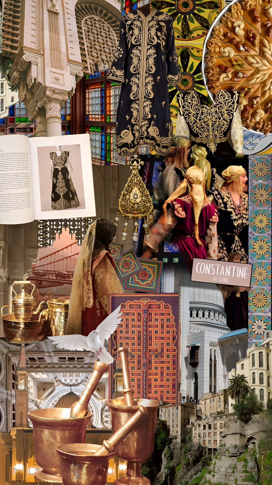
Constantine, also spelled Kasantina and called the Citi of Suspension Bridges, is the capital of Constantine Province in north-eastern Algeria. The city is framed by a deep ravine and has a dramatic appearance and has a lot of bridges the most important are: Bab El Kantra (1792), Sidi M'Cid and Sidi Rached(1912), Falls Bridge and Mellah Slimane (1925), Salah Bey (2014), Devil's Bridge and Meddjez Dechiche Bridge. The most important buildings are El Bey Mosque built in 1703, Great Mosque of Constantine built in 1136, The Kasbah, Massinissa's and Soumma Mausoleums, Ahmed Bey Palace, the Ruins of the Antonian Roman Aqueduct, the Roman city of Tiddis and the Megalithic monuments and burial grounds at Djebel Mazala Salluste. The most known painter of Constantine is Kheira Flidjani meanwhile in the music industry we have the Algerian Malouf which designates the repertoire of Algerian Arab-Andalusian scholarly music of the school of Constantine and whose tradition is linked to the city of Seville, from time of Muslim Spain (you can listen to an example of there music here: click here). Constantine was also the place that constitutes a framework for the French-language Algerian novels and provides impetus for the deployment for imaginations, and thanks to that the city has known writers as Kateb Yacine, Tahar Ouettar, Malek Haddad and Salim Bachi. Concerning food, the city has multiple dishes we cite from them Chbah, Mechalwach and Tbikh from pastries and Chakhchoukha Edfar, Djari Frik and Chtitha from other kind of dishes and finally, the traditional outfit of women from Constantine is the Guendoura.
Tizi Ouzou
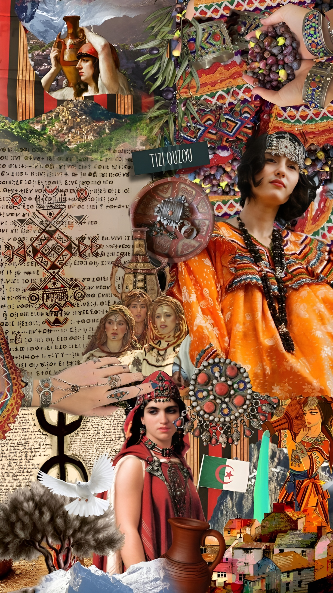
Tizi Ouzou, called also as Capital of Djurdjura, is the second most populous city in th Kabylie region after Bejaia. In this city as in the other regions of Kabylie, the dialecte spoken is the Kabyle dialecte, and the language is the Amazigh language. The new city has modern buildings, but usually in this region people live in villages in the mountains, but that doesn't mean that they don't have important monuments, we can count some of them as the house of Lalla Fatma N'Soumer (a woman martyr that lead the resilience against the french colonialism in it beginning), Taksebt Mausoleum, El Habs El Ksour Roman ruins, Archaeological site of Ath R'Houna, the Regional Museum of Tizi-Ouzou and the Museum and Monument of Martyrs. This city hosts the Algerian Amazigh Film Cultural Festival and various other cultural events such as Yennayer, the Berber New Year, and the Tizi-Ouzou International Cheese Festival which hosts every year many participants coming from Algeria and internationally. Musically, people from this region sing in their dialecte and have their own dance (you can check this link to see what it looks like: click here) but it's also known for it writers such as Mouloud Feraoun, Youcef Dris, Mouloud Mammeri, Said Smail, Aomar Mohellebi and many others. If we talk about kabylie we sure talk about their traditional women outfit, the Taqendurt, also called Kabyle dress or Djebba Kabyle, and what attracts the most when we see this dress is it colours, since the Kabyle people are known for using red, orange and white with some blue and green, and their colourful accessories made with silver since they don't wear gold. And even their food is different, they have dishes you can't find in other places such as Tahbult, Tikorbabin, Aghrum, Makfoul, Aftir Oukassoul and many others. (If you want to see the Region of Kabylie from the sky check this link: check here).
Ghardaia
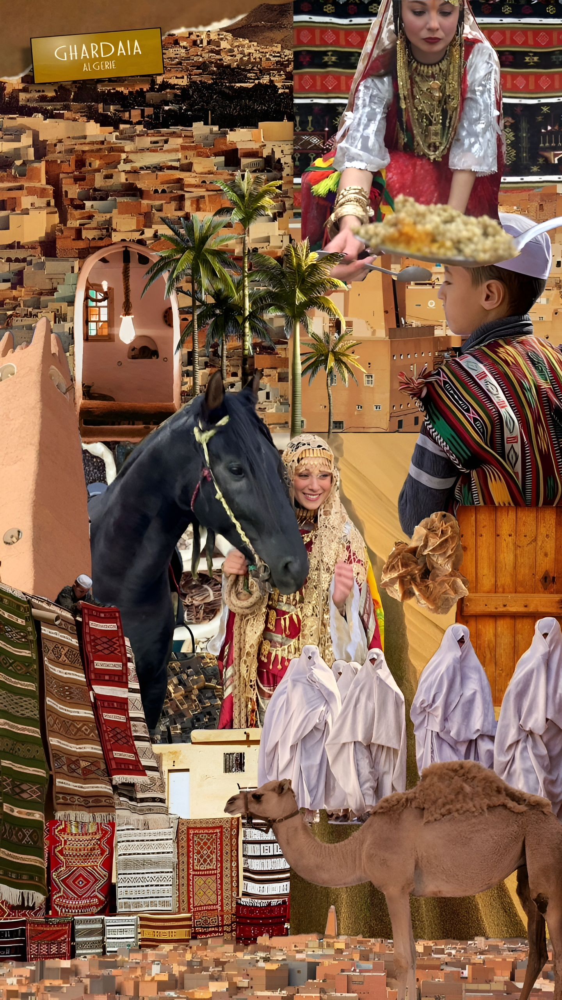
Ghardaia, from it real name Tagherdayt, is a northern-central city in Algeria in the Sahara and lies along the left bank of the Wadi Mzab. The M'Zab in the Ghardaia Province was made a World Heritage Site in 1982, as a cultural property evaluated under the critaria, where they have the Old Souk and Metissa Dam Wadi Mzab. This wilaya is also well known for its Weaving, Dinaderie D'Art, basketry, pottery and carpet weaving (tapestry). The rugs of the area are so popular that every year the "National Day Of Rugs" is held in March, and every spring , the commune of Metlili-Chaamba celebrates the "Day Mehr" when people from all over the country attend and participate in a camel race. The Mozabites of Ghardaia have their distinct identity traditional costume of Saroual Loubia and Chechia for men and the Hayek or a traditional dress for women (you can see it on the picture), this people are also known for being from the Ibadi Religious Sect since they do not subscribe to the doctrines of Sunnism and Shi'ism, and until the Algerian Independence, this city was home to a significant Jewish community of which many were deaf who developed their own village sign language. From the well-known people of Ghardaia we have Moufdi Zakaria, a Mozabite poet, Cheikh Bayoud and Mozabite leader of the reformist mouvement in the south. Musically, the Mozabite have their own kind of music and dialecte, if you want to listen: click here.